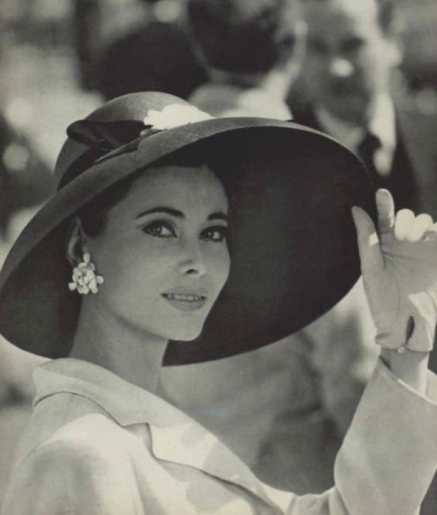
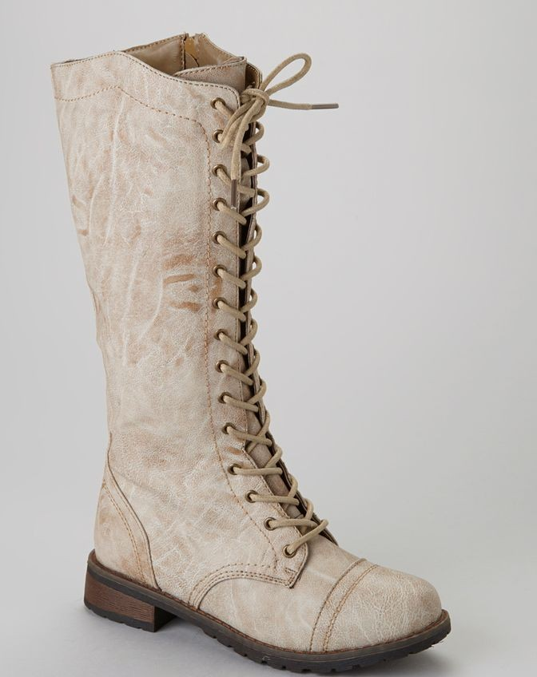
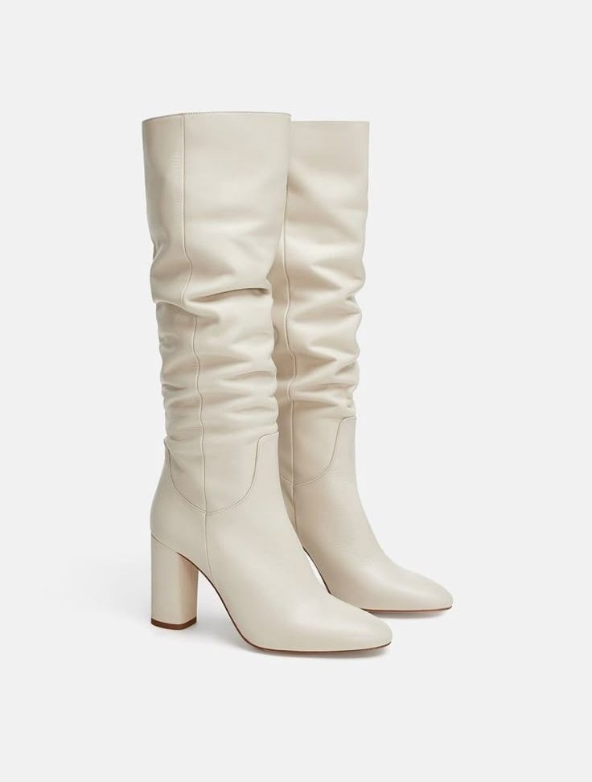
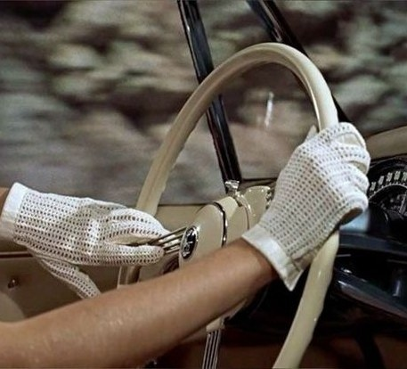
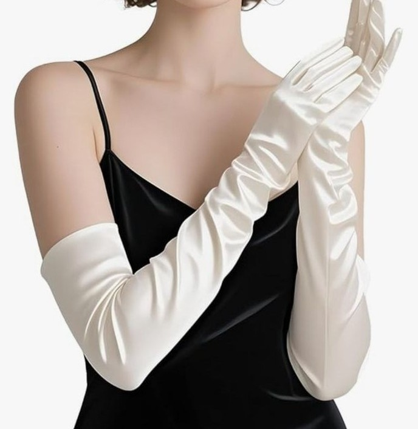
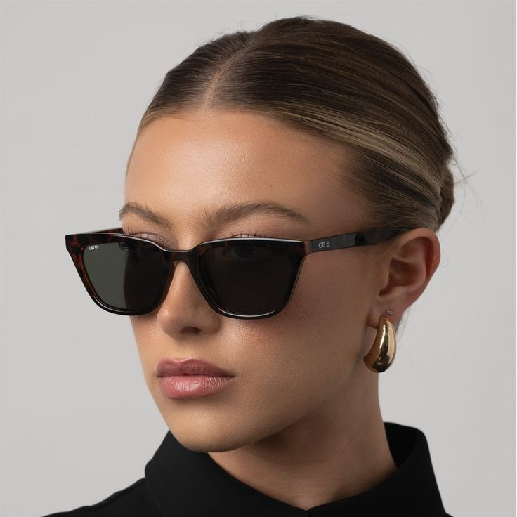

The evolution of the Hat is a journey from mandatory social etiquette to bold
In the past, stepping outdoors without headwear was often considered a public scandal;
hats were rigid symbols of status and profession,
from the structured top hats of the Victorian elite to the practical flat caps of the working class.
Today, the "rulebook" has been tossed aside. While the hat was once a requirement for conformity,
it has been reborn as a tool for individuality. Whether it’s a vintage-inspired wide-brim fedora or a modern technical beanie,
we no longer wear hats because we have to—we wear them to tell the world exactly who we are.
Old Trends , New Energy

HATS
Old Version

New Version
BOOTS
old Version

New Version

The transformation of the Boot is a masterclass in utilitarian roots meeting high-fashion fantasy.
Historically, boots were built for the trenches, the saddle, and the factory floor—engineered strictly for
protection, durability, and survival against the elements.
They were the rugged equipment of soldiers and pioneers, designed to endure what shoes could not.
Fast forward to the modern era, and the boot has migrated from the battlefield to the runway.
While we still value that heritage craftsmanship, boots now serve as the ultimate seasonal statement.
From sleek, thigh-high silhouettes to chunky, "ugly-chic" platforms,
the modern boot balances its tough-as-nails ancestry with a sophisticated edge that anchors any contemporary wardrobe.
GLOVES
Old Version

New Version

Once a rigid symbol of status and propriety,
Gloves were once an essential social requirement that signaled refinement and a life of leisure.
Today, they have traded strict etiquette for versatile utility.
While we still value the elegance of a leather pair,
modern gloves focus on innovation—blending heritage style with practical features like touchscreen compatibility.
No longer a mandatory social shield, they are now the ultimate fusion of classic sophistication and everyday functionality.
SUNGLASSES
Old Version

New Version

In the past, sunglasses were all about Hollywood glamour.
Icons of the 50s and 60s loved oversized "Cat-Eye" frames and
thick, dramatic lenses that focused on elegance and mystery.
Today, the trend has shifted toward function and variety.
Modern shades use high-tech, lightweight materials and polarized lenses for better protection.
While we see a huge "Retro" comeback, today’s styles are more minimalist, featuring sleek lines and a mix of futuristic and vintage vibes.
Regardless of the era, they remain the ultimate accessory for any look.